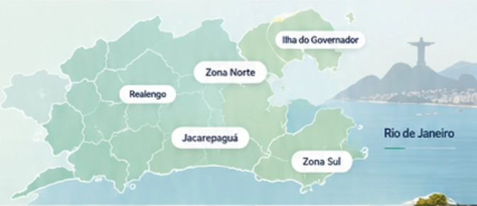

♡
Cuidador de idosos em casa
Companhia e apoio à rotina, conforme as necessidades e os horários combinados com a família.
Saiba mais →CUIDAR IDOSOS · RIO DE JANEIRO
Cuidador em casa, técnico de enfermagem, acompanhante de idoso no hospital, plantões diurnos e noturnos e apoio em viagens e consultas, com atenção à autonomia e às necessidades de cada pessoa.
Converse pelo WhatsApp ↗Consulte bairros, serviços e disponibilidade.

Atendimento humanizadoRespeito, empatia e atenção.
Sua rotina, seu cuidadoNecessidades conversadas com a família.
Clareza em cada etapaDetalhes combinados antes do atendimento.
NOSSOS SERVIÇOS
Conheça as possibilidades de apoio e converse sobre o que sua família precisa.
Companhia e apoio à rotina, conforme as necessidades e os horários combinados com a família.
Saiba mais →Cuidados técnicos por profissional habilitado, dentro de suas atribuições. Consulte os procedimentos disponíveis.
Saiba mais →Presença durante a permanência no hospital, conforme os horários combinados e as regras da unidade.
Saiba mais →Converse sobre dias e períodos desejados. A organização depende do serviço, da região e da disponibilidade.
Saiba mais →CUIDADO COM PROPÓSITO
Cada família tem uma história única. Por isso, o primeiro passo é ouvir: entender a rotina, o tipo de apoio e o que faz sentido para a pessoa idosa.
Vamos conversar ↗APOIO E ACOMPANHAMENTO
Suporte à internação, concierge e organização da rotina, passeios e viagens. Consulte os detalhes e a disponibilidade.
Presença e apoio durante a internação, com comunicação com a família e respeito às regras da unidade.
Saiba mais →Apoio na organização da rotina, de consultas e de compromissos da pessoa idosa, em conjunto com a família. Consulte os detalhes e a disponibilidade.
Saiba mais →Companhia em visitas, caminhadas e atividades de lazer, respeitando as preferências e o ritmo da pessoa idosa.
Saiba mais →Apoio durante viagens e deslocamentos, com planejamento prévio dos horários e das necessidades de acompanhamento.
Saiba mais →UM PASSO DE CADA VEZ
Explique qual apoio sua família está procurando.
Envie o bairro e os dias ou horários desejados.
Conversamos sobre o serviço e as possibilidades de atendimento.
Alinhe rotina, responsabilidades e horários antes de começar.
CUIDADO PARA IDOSOS NO RIO DE JANEIRO
A CUIDAR IDOSOS conecta famílias do Rio de Janeiro ao apoio de que a pessoa idosa precisa. Você pode consultar cuidador de idosos em casa para companhia e apoio à rotina, técnico de enfermagem para cuidados técnicos, acompanhante hospitalar durante internações e plantões diurnos e noturnos.
Também é possível consultar o acompanhamento em viagens e em consultas, exames e passeios. Atendemos bairros da Zona Norte, Zona Sul, Jacarepaguá, Barra da Tijuca, Ilha do Governador e Realengo, e o contato por telefone e WhatsApp funciona 24 horas, todos os dias.
À frente da CUIDAR IDOSOS está Mariano, cuidador de idosos, técnico de enfermagem e terapeuta naturopata. Conheça também a terapia naturopata para idosos, como apoio complementar ao cuidado.
Para decidir com mais segurança, leia os guias: cuidador ou técnico de enfermagem, como escolher um cuidador, quanto custa e alta hospitalar do idoso.
CURATIVOS EM CASA
Além do cuidado domiciliar, a CUIDAR IDOSOS oferece a consulta de curativos em casa, feitos por técnico de enfermagem. Entre os cuidados que podem ser consultados:
Os curativos são feitos por técnico de enfermagem (Mariano, COREN-RJ 2014489-TE), conforme a prescrição e a orientação do médico ou do enfermeiro responsável. Não substituem a avaliação médica; havendo febre, secreção, dor forte ou piora da ferida, procure uma unidade de saúde.
DÚVIDAS FREQUENTES
Envie o bairro pelo WhatsApp. A cobertura e a disponibilidade são confirmadas durante a conversa.
Sim. Informe a unidade e os períodos desejados para consultar disponibilidade, respeitando as regras do hospital.
Os cuidados técnicos devem ser realizados por profissional habilitado, dentro das atribuições profissionais e conforme o serviço combinado.
Informe o tipo de apoio, o bairro e os dias ou horários desejados. Converse em particular sobre as necessidades da família.
É possível consultar plantões noturnos, em casa ou no hospital. A disponibilidade depende do período, da região e do serviço; confirme com Mariano pelo WhatsApp.
O cuidador acompanha a rotina e a companhia; o técnico de enfermagem realiza cuidados técnicos de saúde dentro das atribuições da profissão, conforme prescrição. Veja o guia completo sobre as diferenças.
É possível consultar o acompanhamento em viagens e deslocamentos, com planejamento prévio. Informe destino, datas e as necessidades da pessoa idosa.
Envie a Mariano o tipo de apoio, o bairro ou o hospital e os períodos desejados. O valor e as condições são informados conforme o serviço solicitado.
Cuidador de idosos em casa e acompanhamento hospitalar no Rio de Janeiro. Abra uma região para ver os bairros e consulte a disponibilidade para o serviço e os horários desejados.
Bento Ribeiro, Madureira, Oswaldo Cruz, Marechal Hermes, Cascadura, Campinho, Quintino Bocaiúva, Rocha Miranda, Honório Gurgel, Méier, Cachambi, Engenho de Dentro, Engenho Novo, Piedade, Pilares, Abolição, Irajá, Vila da Penha, Vicente de Carvalho, Vista Alegre, Penha, Penha Circular, Olaria, Ramos, Bonsucesso, Tijuca, Vila Isabel, Grajaú, Andaraí, Maracanã e Alto da Boa Vista, entre outros bairros da região.
Consultar atendimento nesta regiãoAtendimento na Barra da Tijuca e no Recreio dos Bandeirantes.
Consultar atendimento nesta regiãoTambém atendemos em Realengo e na Ilha do Governador. Informe sua localização para consultar os horários disponíveis.
Consultar atendimento nesta regiãoVer todos os bairros e suas páginas →
Não encontrou seu bairro? Fale com Mariano pelo WhatsApp: (21) 97202-5533.
ONDE ATENDEMOS
Cuidado domiciliar e acompanhamento hospitalar nas regiões atendidas. Consulte bairros e disponibilidade.

Fale agora com a nossa equipe e encontre o plano ideal para a sua família.